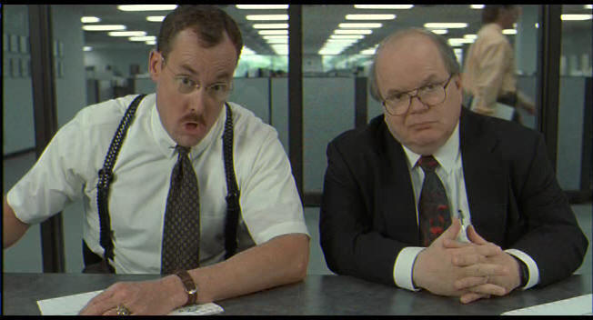
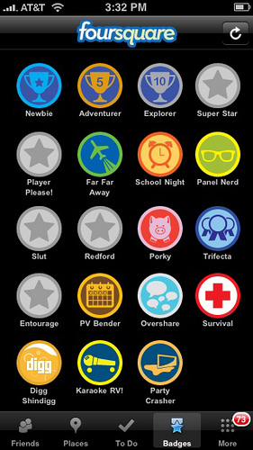
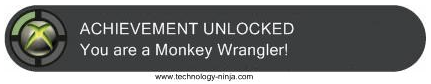

Why does Mozilla need a Badger?
 The overwhelming sentiments I saw echoed everywhere at the 2010 Mozilla Summit were wonder and gratitude—that is, "Wow!" and "Thank you!" From the breakout sessions to science fair demos to the running of the event itself—there were so many awesome people, doing so many awesome things.
The overwhelming sentiments I saw echoed everywhere at the 2010 Mozilla Summit were wonder and gratitude—that is, "Wow!" and "Thank you!" From the breakout sessions to science fair demos to the running of the event itself—there were so many awesome people, doing so many awesome things.
As a nerd and a programmer, I saw this as a problem: If I set about in person spreading the proper amount of wonder and gratitude that each and everyone deserved, I would never finish by the end of the Summit. And worse, if everyone tried to do that, we wouldn't have had the time to show each other awesome things to begin with.
But, when I saw a keynote slide comparing Mozilla community aspirations to the Boy Scouts, I had an idea: What if Mozillians could give each other Merit Badges? It's not an original idea, and there are lots of variations: badges for Scouts; medals for athletes; achievements for gamers—these are all tokens of recognition from a group to an individual.
The thing I thought might work for Mozilla, though, was this: What if there were no central committee in charge of inventing awards and overseeing their distribution? What if, by way of the same Open Web technologies and philosophies we support, the community could be empowered to craft artifacts of gratitude and present them to each other?
This is easier said than done, but I have a hunch that something interesting can be built at the Mozillian intersection of community and technology.
Table of Contents
What is Badger?
Badger is an Open Source social web application under development that aims to support these features:
Artifacts of gratitude—i.e. badges—as social objects to exchanged, displayed, and discussed.
Showcasing community values through the things we collectively celebrate.
Public recognition of community members and their valued contributions.
Transparent, open processes for participating in creating, awarding, discussing, and evaluating badges.
Collaboration on badge creation through a "Help Wanted" system that presents minimal overhead for coordination and offers a playful space for creative contribution.
Mobile device support for awarding badges on the spot and expressing public gratitude in person.
Rule-based awards triggered by conditions detected on the web in the tools we use for work every day.
Why badges?
For the purposes of this article, consider that a badge is an artifact of recognition. There are other connotations for the word "badge" involving authority and power—but let's ignore those for now.
Badges are collectable, and that collection can made visible to other people. A badge collection tells the story of things that other people have declared about the person who owns the collection. A badge collection is also a set of things that the owner has chosen to share.
This puts both the badge presenters and bearers in control of assertions—which means badges have something to say about all parties involved: The set of available badges is a comment on things valued by the community that presents them. Conversely, badges accepted and displayed by a person can help demonstrate what values he or she shares with the community.
And beyond what they assert, badges are social objects. People have opinions about badges, the people who present them, and the people who claim them. Some applaud the sentiment behind particular badges; some congratulate the people who claim them; some people make plans to earn them. Some badges are more attractive than others, some are funny, and some are more difficult to achieve. This is all context that make badges interesting beyond just what they assert.
What do we value?

Mozilla has a mission to promote openness, innovation, and opportunity on the web, and we are globally distributed in the way we go about pursuing that mission. Sure, we have leaders heading up the various Mozilla organizational entities, but much of what drives the mission comes up from the roots of the community.
Encapsulating community values as social objects of gratitude seems interesting to me, especially from the perspective of the Open Web as a social movement.
Empowering community members to create badges could help us as individuals to discover and learn specifically what is valued within our community—especially from parts of it we don't encounter on a daily basis.
For example: As a webdev, I don't always know what's going on in the area of JavaScript interpreter improvements—even though I'd be very interested if I had the time to dig. The weekly update meeting is too crowded to cover everything, and it's not every day we have a full Summit week of lightning talks to bring things to the surface.
But, if I saw a few people claim some highly-applauded and coveted {Spider,Trace,Jager}Monkey-themed badges, I might just get a clue toward the major happenings.
Just what is it you do here, anyway?

A common conversation starter at the Summit—and, for that matter, at most Mozilla get-togethers—is "So, what do you do?" Sometimes the answer is simple, and sometimes it's a long story.
We often have ice breakers to get people mixing and swapping stories, which helps. But, what if I had an instant, personalized conversation starter—say I printed out favorites from my collection of badges before an event and wore it on a lanyard?
When I meet another Mozillian who's done the same, we can point at each other's community-generated icons and say "Whoa, that's cool! What did you do to get that? Oh, you work on that thing? Nice!" And, off we go.
More than titles or job descriptions, a badge collection could help explain just what each of us does in the eyes of the community, using a shared cultural context expressed by the badges themselves.
Also, consider that badges should be localizable—this could help bridge the language barrier in answering the question "So, what do you do?" when we meet online and face-to-face.
Talk amongst yourselves
 This is one of the principles laid out in the Mozilla Manifesto:
This is one of the principles laid out in the Mozilla Manifesto:
"Transparent community-based processes promote participation, accountability, and trust."
And accordingly, badges as social objects should exist within precisely this sort of process. With the exception perhaps only of badges meant to be a surprise, everything should be open and visible to all.
Badges should be subject to applause, discussion, and improvement with distributed editorial control. The community should be able to lift up badges that represent common values, and be empowered to help deflect abuse.
Help Wanted
 At the summit, Guillermo Movia gave a lightning talk about web stencils and street art applied to the web and Artzilla.org. That excited me about the creativity in our community. And then there's the participatory success of Personas and the flood of creative personalization received by that initiative.
At the summit, Guillermo Movia gave a lightning talk about web stencils and street art applied to the web and Artzilla.org. That excited me about the creativity in our community. And then there's the participatory success of Personas and the flood of creative personalization received by that initiative.
Mozilla has a long-running tradition of producing fun things to celebrate the community and its accomplishments. We have swag closets full of t-shirts, posters, stickers, and toys—both at the office and at home.
When I got home from the summit, I thought: Wouldn't it be cool if we could keep that going in a distributed way? What if there was a way to get people together to craft virtual artifacts of gratitude for each other—i.e. badges—that were as playful and desirable as the physical swag we give away all the time?
To make it work, the system has to do the heavy lifting to facilitate collaboration. Creating a badge shouldn't demand a conference call or meeting of any kind.
So, the idea I had was a kind of "Help Wanted" system:
- Badger can offer a "Help Wanted" search that cuts across aspects of badges associated with creative skill sets.
- Have an idea for a badge? Create it and fill in as many details as you can, leave the rest marked "Help Wanted", maybe with notes about your intentions.
- Are you a designer? Can you make illustrations? Look for badges with artwork marked "Help Wanted" and submit contributions.
- Artists could also contribute to a general library of clip art and stencils from which others could compose badge imagery as collages
- Are you a writer? Look for badges with descriptions marked "Help Wanted" and contribute.
- Are you a localizer? Look for badges marked "Help Wanted" in your native locales and offer localizations
Ideally, with some editorial controls put into the hands of individual badge creators—as opposed to being driven entirely by top-level moderators—this could result in a decentralized effort to create and improve badges with no need for synch-ups and minimal overhead to coordinate everyone.
If the collaboration doesn't feel like work, we might just have some fun with it.
And, of course, there will be badges for helping make badges.
On the spot (or, mobile support)
 Imagine that someone does something at an event that you really like—say it's a science fair demo or a lightning talk. You could pull out your smartphone and nominate them for a badge on the spot.
Or, say a speaker at a breakout session wants to engage the audience by handing out badges. The speaker could offer a code that represents a ready-made nomination for you, as the reverse of the previous scenario. This is kind of like the location-based "check-in" offered by Foursquare and others, only tied to a more abstract event or happening.
As social objects, badges on the web are identified by URLs and can bookmarked and shared. People and badges can also be given shorter identifiers that are friendlier for typing on mobile devices.
If you don't have someone's profile in Badger bookmarked, a glance at their name tag could give you a short user name or code to tap into a nomination form. Maybe it could even be a QR code on their event badge that you snap a picture of to submit the badge nomination.
Decision makers and laziness
At first, many badges will be people-powered in the awards process:
- Bob creates a badge named "Monkey Wrangler".
- Tom nominates Bill to be awarded the "Monkey Wrangler" badge.
- Bob sees the nomination, decides that Bill is indeed a wrangler of monkeys, and approves Tom's nomination.
- Bill sees that he's eligible to claim the "Monkey Wrangler" badge, and adds it to his collection.
But, as a lazy coder, anything I do more than twice gives me an irresistible urge to write a script. And, as a gamer, I love the little thrill of satisfying the requirements for an achievement on my Xbox 360.
 Let's say that Bob considers a "Monkey Wrangler" anyone who's fixed 25 bugs on the new FunkyMonkey JavaScript engine. So, we can build a system that watches bugs and keeps count, and Bob can build this into his badge. Once Bill has met the requirements for Bob's badge, the nomination and approval happen automatically and goes straight to Bob's inbox to be claimed.
Mozilla Pulse and LizardFeeder are systems that could play a part in this, feeding events into the badge system that could eventually be turned into automated "thank you" badges to contributors.
I'm not entirely sure how things in this area will work out, but I'd like to build a system here that allows non-programmers to declare conditions for achievements and monitor those conditions on any web site or service.
On the other hand, this could be an area where "Help Wanted" can connect people with badge ideas to people with badge programming skills.
Meta-Badges
Some badges could be awarded for collecting a set of other badges.
Let's say you get a unique badge for every Test Day attended. After 10 of these, you get a "Test Day Hero" badge. The same could apply to questions answered on support.mozilla.org, or anything that helps the community over time.

As pictured above, this is a concept familiar to World of Warcraft players. In many cases, players stick with the game just to complete these overarching goals, whether or not they have a direct bearing on the central story or progression through the game. (e.g. There are meta-badges in WoW for collecting pets.) This makes meta-badges them an interesting way to reward complex and long-term activities.
Open Source, Open Web
Badger is Open Source. If other communities want to host their own Badger and build badges as social objects, they can. I'll welcome patches and pull requests to improve the code.
And, beyond that, I want Badger to expose open APIs that welcome mashups, hacks, and external apps. A desktop notifier that announces newly awarded badges with fanfare would be awesome. Widgets for displaying badge collections on personal sites would be great.
There should be plenty of room here for Badger to be a part of the Open Web. And, perhaps more importantly, Badger should rely on other services as much as possible so that it remains focused. This project doesn't aim to replace Facebook or Twitter or Bugzilla or wikis—it aims only to augment those services with artifacts of gratitude as social objects.
The Next Million Mozillians
This whole time, when I've been mentioning "our community", what I've had in mind is that slide of Boy Scouts all gathered together and the idea of the Next Million Mozillians. These badges are for every one who supports the Open Web, not just employees or volunteers who've uploaded a patch to Bugzilla.
It might be a bit much, but what if everyone hitting our download pages could get an "I downloaded Firefox" badge like the stickers and certificates made for Download Day in 2008? Or say we awarded a badge the first time someone downloaded and built the Firefox source tree? Or built an add-on? Or uploaded a Persona? Or helped clean up after a party in Mozilla HQ, even though he or she worked at Google?
Badger is aimed at wrapping up community values in social objects and then letting everyone on the Open Web in to play.
Summary
Badges can represent our community values as social objects to be crafted, discussed, and gifted as artifacts of gratitude. Each aspect of this process can help celebrate what our community is all about, while at the same time offering public recognition to individuals.
For me, personally, Badger is a notion to overcome my own shortcomings. I'm in awe of everyone in the Mozilla community, but there's not enough time in the world to thank everyone personally. So, instead I'd like to solve that problem by building something that enables everyone to thank everyone else in a shared and open space.
It might sound a bit hokey and precious, and maybe there'd be a danger of broken arms from all the patting ourselves on the backs—but I think the sentiments are genuine and the proper tools could tap into some surprising creativity in our community.